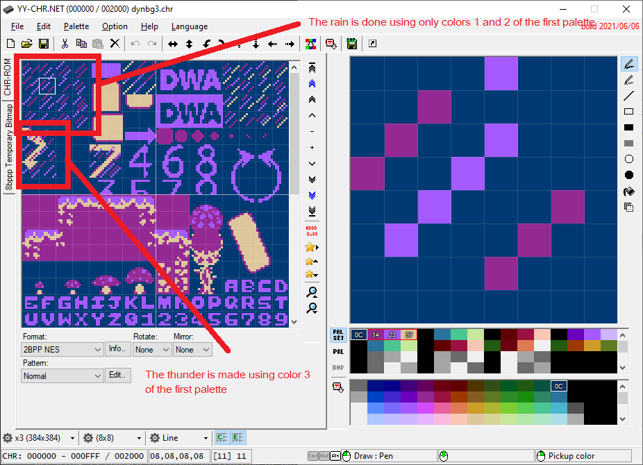

NESFab Tutorial - Dynamic Background Through Palette Changing
BG Animation Through Palette Changing
Appart from the method shown in the previous example, there is another widely known method to animate the background: Palette changing. This method is used, for example in Duck Tales 2 to create the rain:
The Demo
Palette changing is used in this example to ilustrate the case. Take into account that all the background animation in this example, including the rain, the thunders, and the sky lighting, is only done through the change of palette 0 and the Universal Background Color. No other tricks are used.
The Workings
This method is very simple. The trick consists in drawing 2 or 3 overlapping frames of animation in a block with a unique color each (each drawing will be 1 bit depth). Then, the palette the graphics are using is changed to create an illusion of animation by showing only the colors of the frame we want. Look at the following picture:

As you can se above, the rain animation is using only colors 1 and 2 of the first palette, which will be shown alternatively, and the thunder is done using color 3, and is shown when the thunders appear. To show the animation frame we want, we only need to change the first palette, that is, chaging the indexed color 1 and 2 to blue/black, alternatively, and color 3 to yellow/black, when the thunders must appear/dissapear.
Here is the main routine. The "palette" variable is a global variable U[25] used in NESFab to put, all the colors of the system palettes (see palettes.fab):
while true
update_pads()
move_player()
update_sprites()
// Rain
if (curr_frames>=RAIN_FPS_WAIT)
curr_frames=0
//
if (pal_num==0)
palette[0]=$11
palette[1]=$0F
else
if (pal_num==1)
palette[0]=$0F
palette[1]=$11
pal_num+=1
if (pal_num>1)
pal_num=0
else
curr_frames+=1
// Thunders
if (ray_frames>=next_ray)
if (ray_frames>(next_ray+RAY_DURATION))
ray_frames=0
palette[2]=$0F
next_ray=rand() // randomly schedule next ray
if (next_ray<RAY_FPS_WAIT_MIN)
next_ray=RAY_FPS_WAIT_MIN
if (next_ray>RAY_FPS_WAIT_MAX)
next_ray=RAY_FPS_WAIT_MAX
else
//palette[2]=$38
U y_pal_i=ray_frames-next_ray
palette[2]=ray_pal[(y_pal_i & 7)]
// Sky Flash
if (ray_frames>=next_ray)
U f_pal_i=ray_frames-next_ray
if (f_pal_i<8)
palette[24]=flash_pal[f_pal_i]
//
ray_frames+=1
//
nmi // Wait for the next NMI
//
To update the rain, palette[0] and palette[1] are set to blue/black alternatively. When the thunders must show, palette[2] is set to a gradient of yellow. And finally, when the sky should iluminate by the thunder (Sky Flash), the universal background color (palette[24]) is set to a gradient of white.